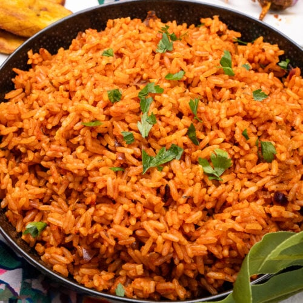

Jollof Rice Recipe

Description
Jollof rice is a staple in West African cuisine. It's made from rice, tomatoes, onions, peppers, and other seasonings.
The dish is cooked in one pot. It's simple and easy to make at home—and the end result is absolutely delicious!
Ingredients
- 4 cups parboiled rice
- 2 carrots , peeled and cut into large matchsticks
- ½ lb green beans , cut into 1 inch-pieces
- 4 tablespoons vegetable Oil
- 2 onions, thinly sliced
- 8 oz tomato paste
- 1 (14 oz.) can tomato puree
- 2 Scotch bonnet peppers
- 2 bay leaves
- 1 tablespoon curry powder (optional)
Steps
- Blend the garlic, onion, ginger, stock cube and chili peppers, with 3 cups of water.
- Heat oil in a non-stick pan and fry the sliced onions for 8-10 minutes until soft and golden brown.
- Add the tomato paste and continue cooking while stirring for 5 minutes.
- Add the tomato puree, 1 onion, and 2 Scotch bonnet peppers and blend to obtain a smooth consistency.
- Add this mixture to the pan with the onions and tomato sauce, and mix. Add the vegetables and simmer for about 15 minutes.
- Add the bay leaves and curry powder. Add the rice to the sauce and stir. Add salt to taste. Cover and simmer on a low heat till rice is fully cooked, about 20 minutes.
- Serve the rice with the chicken, as well as fried plantains or a green leaf salad on the side.